Reconstrucción geográfica, evidencia visual y análisis territorial conectando la geografía económica con las Normas Internacionales de Información Financiera (NIIF).
Visualización geográfica del levantamiento en campo en la Parroquia El Cafetal.
Acompaña al equipo de investigación en el levantamiento audiovisual realizado en la Parroquia El Cafetal.
* Video oficial documentando las etapas del estudio de campo.
Evidencia recolectada durante el levantamiento de información en sitio por el equipo de investigación.
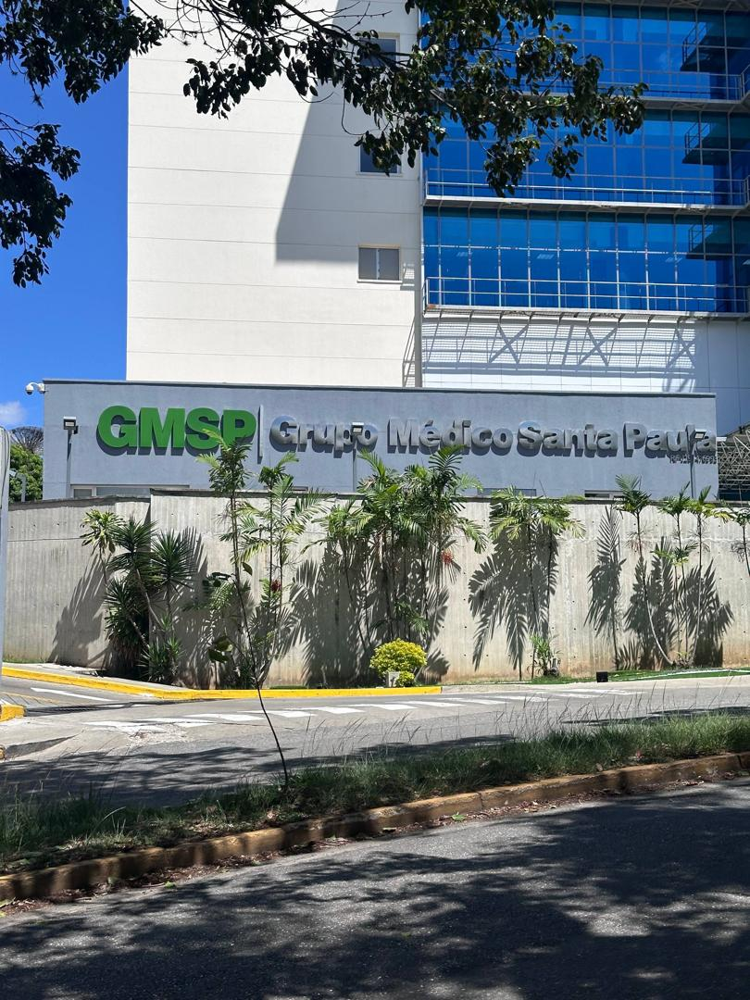
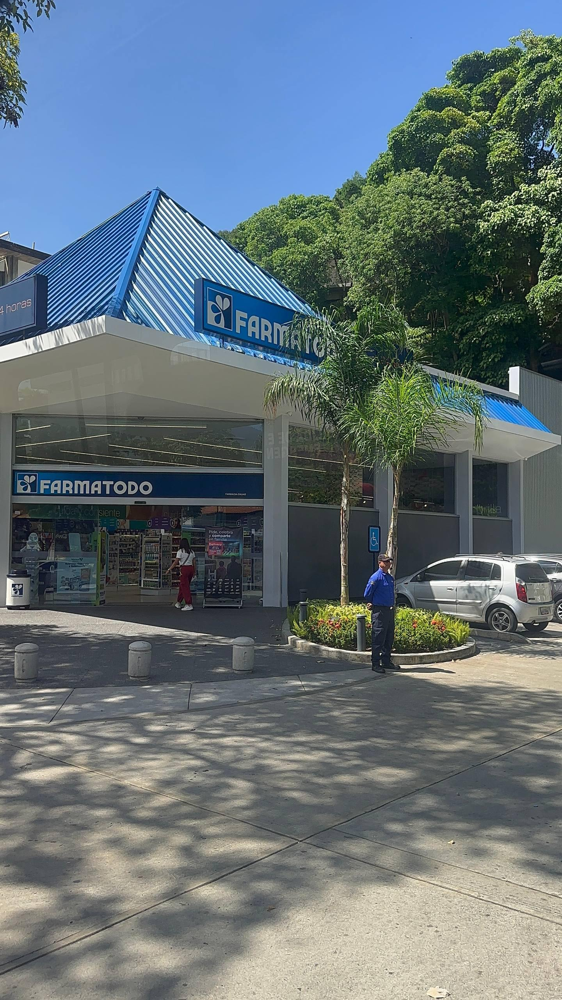
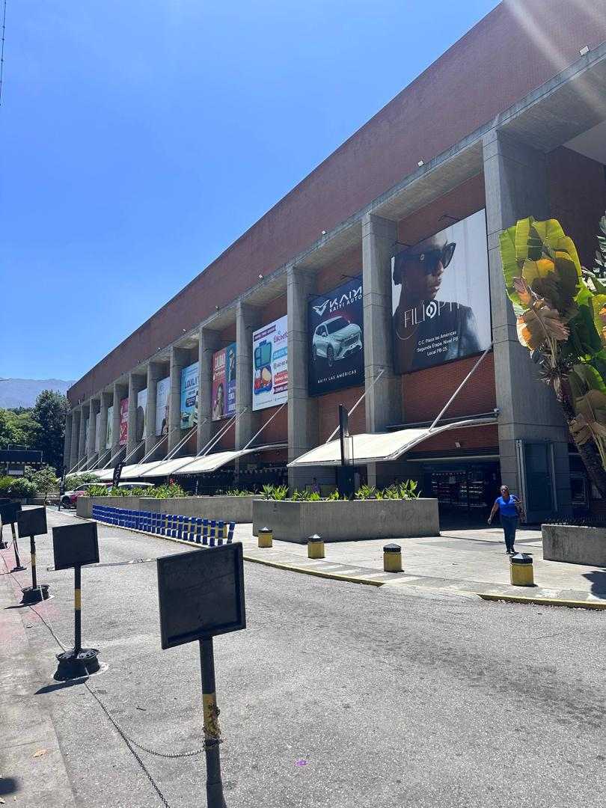
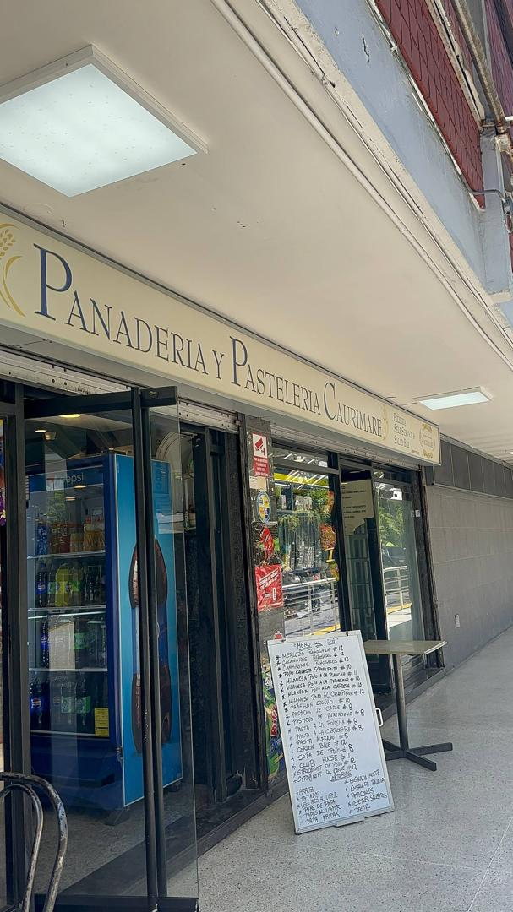
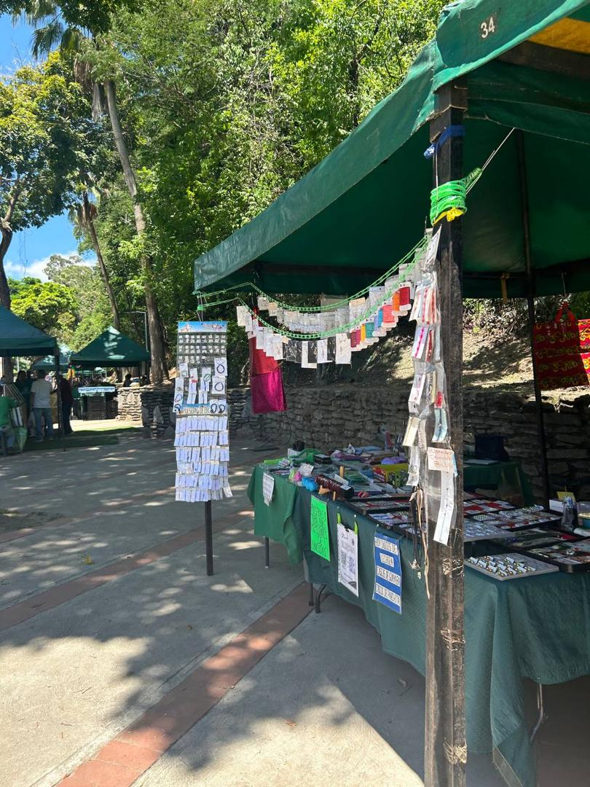
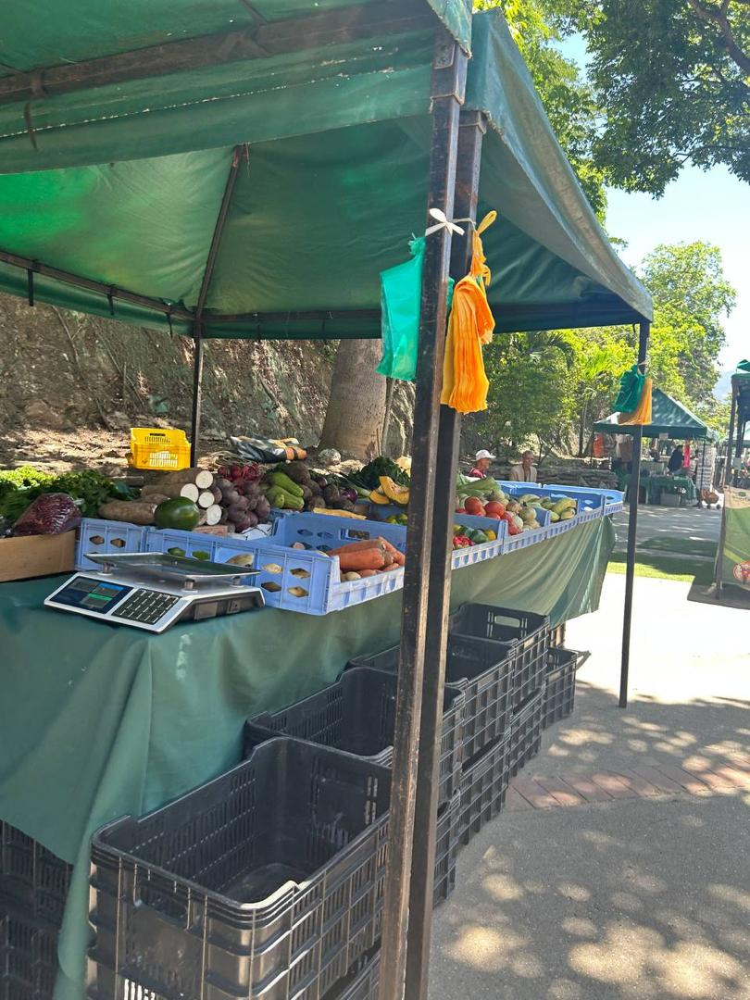
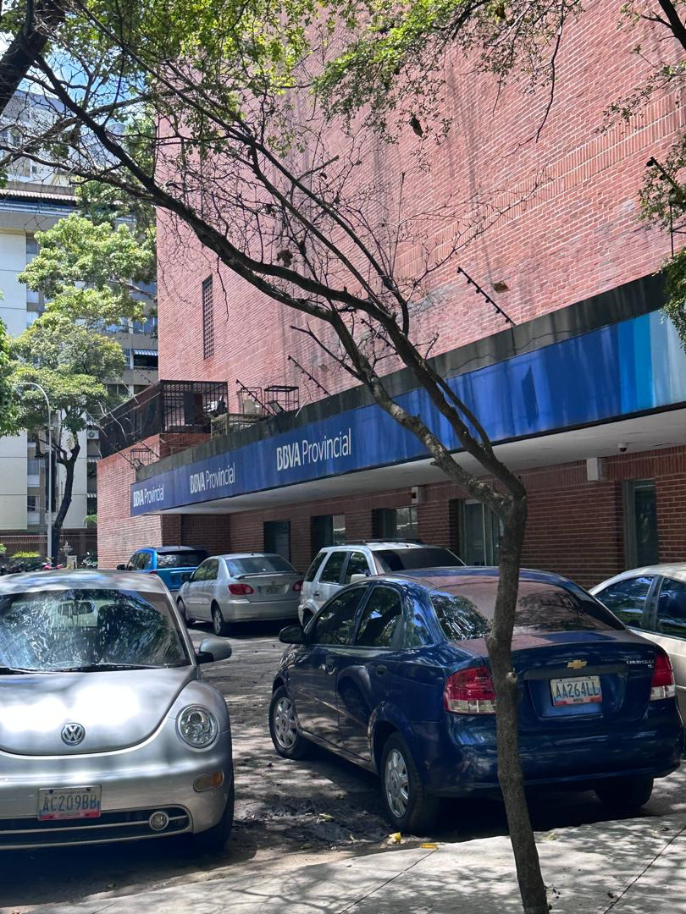
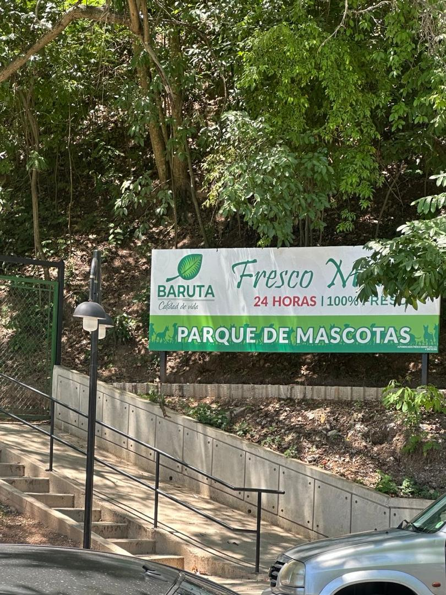
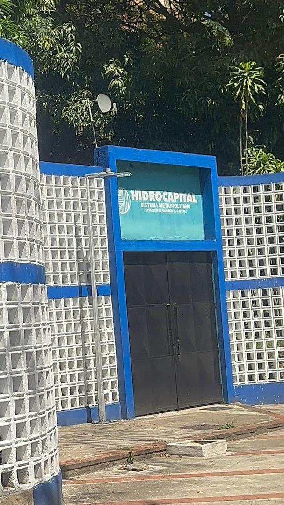
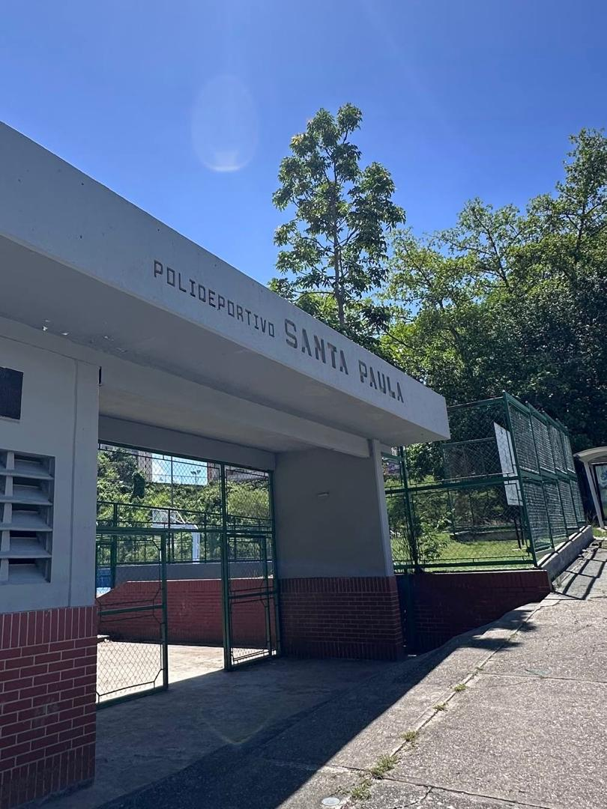
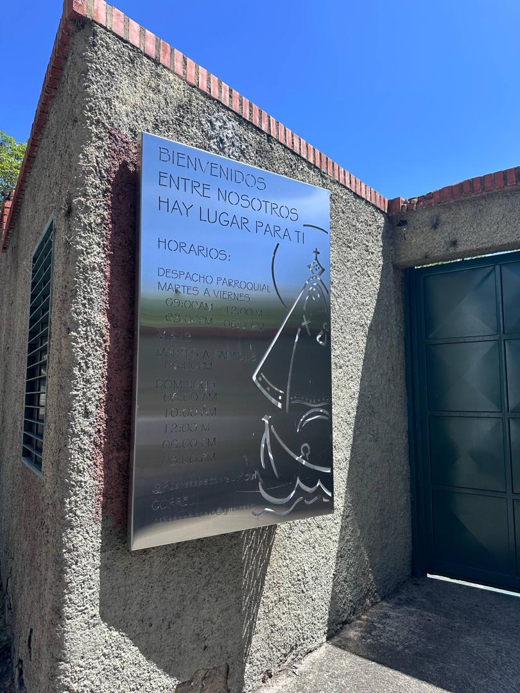
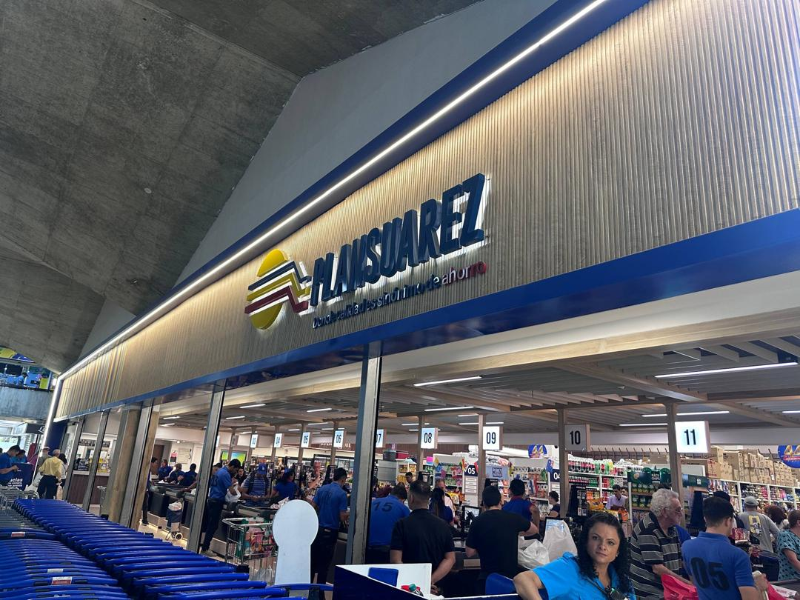
Hallazgos, dinámicas socioeconómicas y conclusiones del estudio realizado por la Facultad de Ciencias Económicas y Sociales (UCV).
La investigación adoptó un enfoque cualitativo descriptivo basado en la observación directa no participante para evaluar la convergencia entre la geografía económica y las Normas Internacionales de Información Financiera (NIIF).
Sábado a las 10:00 a.m. Asignación de guías (Abrehilym y Bárbara Ramírez) y registro audiovisual.
Punto de reunión en Chacaíto (frente al Centro Parks) y abordaje de transporte público hacia la Clínica Santa Paula.
Inspección estructurada en cuatro etapas (Santa Paula, Plaza Las Américas, Bulevar y Grandes Cadenas).
Registro fotográfico del equipo durante la ejecución del estudio en la Parroquia El Cafetal.
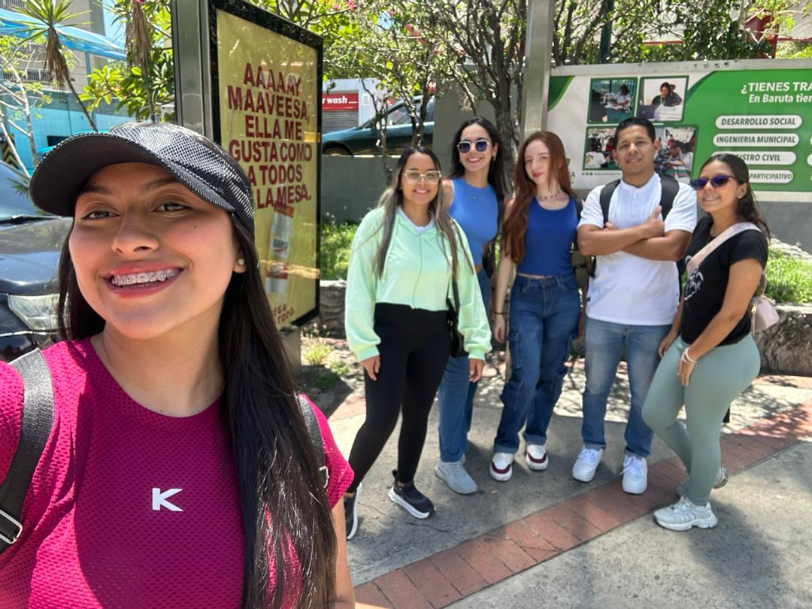
Comisión de Campo - Cátedra de Geografía Económica